The sequence picture, design C: Marquee
Louis's pick of three, 2026-11-14. It draws "louis-agent.diagrams: drawing one picture" from the data its JSON holds today: five participants with their icons and tones, calls, answers, two notes, and one block with two cases.

- A participant is a badge in its tone and a name, with no box.
- A call is a beam from violet at its sender to blue at its receiver, with dots running along it.
- An answer is a thin dashed grey line.
- The key has an item only for what the picture has.